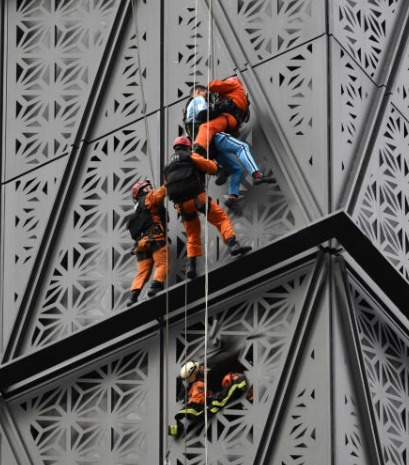
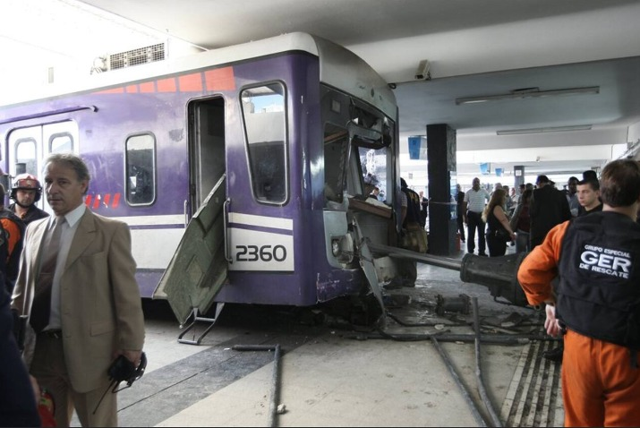

Algunas de las intervenciones más importantes

Rescate de escalador en Puerto Madero
Así fue el salvamento realizado por el Grupo Especial de Rescate al escalador polaco que intentó trepar un edificio en Puerto Madero.
El GER logró rescatar al escalador y ponerlo a salvo.
Accidentes de trenes en estacion Once

La estación de trenes Once sufrió 2 accidentes. El primero el 22 de febrero de 2012 que tuvo 51 muertos y más de 700 heridos. Y el segundo el 19 de octubre de 2013 con más de 100 heridos. En ambos incidentes el GER estuvo rescatando víctimas.
Incendio y explosión en perfumeria
Mientras los bomberos trabajaban para controlar las llamas, se produjeron dos fuertes explosiones. La primera dió lugar a la trágica muerte de dos bomberos, siendo uno de ellos operador del GER.